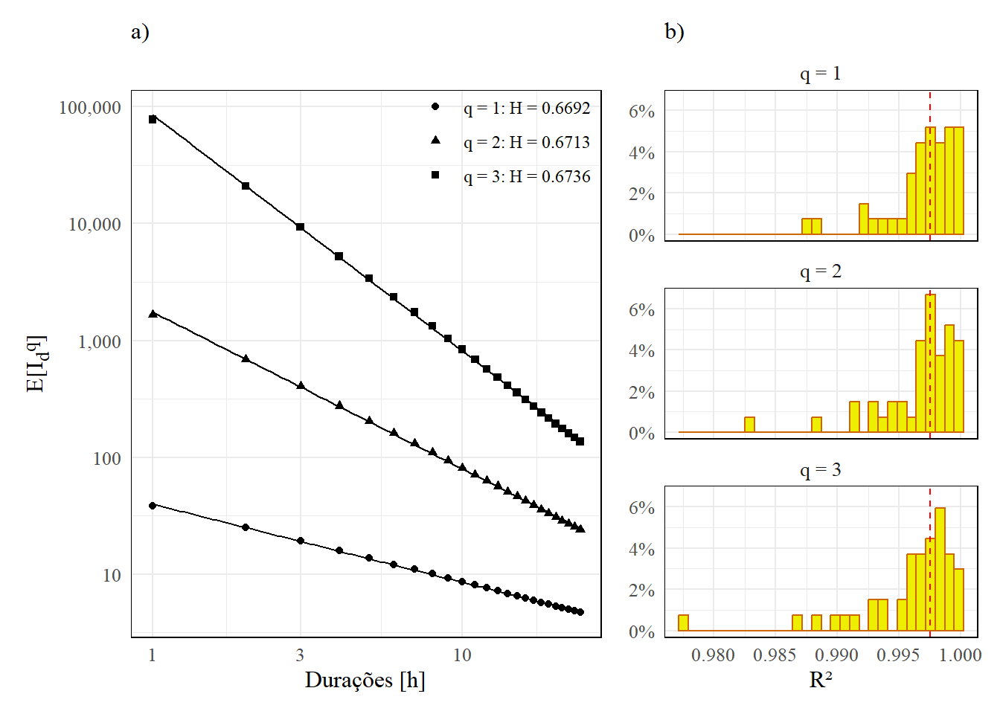
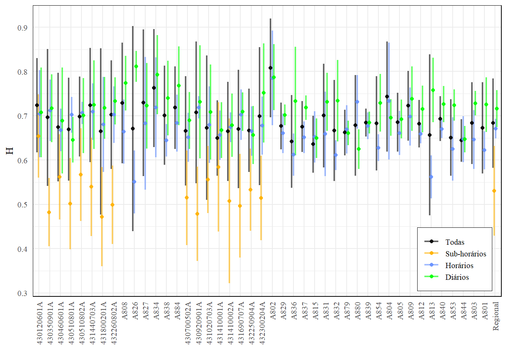

A expressão acima relaciona uma função \(f(x)\) a uma função escalonada \(f(\lambda x)\) através de um coeficiente \(C(\lambda)\), este igual a \(\lambda^{-H}\) no caso simples. O fator de escalonamento, por sua vez, é dado por \(\lambda = d/D\), sendo \(D\) o valor não escalonado (ex. 24 h) e \(d = \lambda D\). Através da relação de invariância de escala temporal, as intensidades para durações diferentes seguem a relação (Menabde, Seed, e Pegram 1999):
Como \(H\) e \(D\) são escalares constantes, podemos chamar \(f(q) = D^{Hq} \ E[I_D^q]\) e, assim, obter:
\[
E[I_d^q] = f(q) \ d^{-Hq}
\tag{2}\]
Em um procedimento de regressão linear com duas variáveis (uma dependente \(Y\) e outra independente \(X\)), podemos estabelecer uma relação do tipo \(Y = \beta_0 + \beta_1 X\). Se tirarmos o logaritmo de Equação 2, conseguimos manipular a expressão para tomar a forma de uma relação linear:
em que a variável dependente \(Y = \log(E[I_d^q])\) será função de uma variável independente \(\log(d)\) multiplicada por um parâmetro \(\beta_1 = -Hq\), somada a um parâmetro médio \(\beta_0 = \log(f(q))\), o qual será constante se definirmos a ordem dos momentos não centrais.
A hipótese de invariância de escala pode ser avaliada local e regionalmente, este agrupando todos os anos de todas as estações do conjunto para uma mesma duração \(d\) e ajustando um modelo de regressão linear (Menabde, Seed, e Pegram 1999; Rodrigues et al. 2023; Casas-Castillo et al. 2025). Para o três primeiros momentos não centrais (ou seja, \(q = 1, 2, 3\)) teremos
Ajustando o valor do coeficiente angular \(\beta_1\), teremos \(\beta_1 = H_1 = -H\) para o primeiro momento não central; \(\beta_1 = H_2 = -2H\) e \(\beta_1 = H_3 = -3H\) para o segundo momento não central e, em teoria, \(H_1 \approx H_2/2 \approx H_3/3\).
Seguindo a metodologia acima, podemos construir uma função – que chamaremos de fun_scale_invariance – para ajustar um modelo linear a n momentos não centrais de intensidades de múltiplas durações e obter uma estimativa do coeficiente de escala \(H\), além de permitir uma avaliação sobre a validade ou não da hipótese de invariância de escala na região. Na análise que faremos, separaremos os ajustes em intervalos de duração diferentes. Isso porque também nos interessa avaliar se os valores de \(H\) ajustados são muito diferentes para as durações sub-horárias, horárias, diárias e considerando todas as durações.
Construção dos modelos
Começamos importando as séries de intensidades máximas anuais para diferentes durações calculadas em Máximos anuais de intensidade no arquivo df_imax.parquet.
df.imax <- arrow::read_parquet(file ="base/gerados/df_imax.parquet")head(df.imax, n =5)
Esta tabela foi gerada sem aplicar filtros, mas contém, na coluna na_prct, uma forma que permite que o façamos agora. Definiremos dois critérios para validar as estações que serão utilizadas para a análise: na.accept, um percentual mínimo de falhas anuais; e min.years, qual o número mínimo de anos que uma estação deverá ter com na_prct <= na.accept para que seja incluída na análise. Adicionalmente, para uma regressão linear é interessante que tenhamos pelo menos três pontos diferentes. Isso é importante quando avaliarmos as estações por intervalos de duração. São poucas as estações
na.accept <-0.2# percentual de falhas (0.2 -> 20%)min.years <-8# mínimo de anos na sériewhich.moment <-1:3# qual momento usar de base p/ gerar figuras individuaismin.duration <-3# mínimo de durações diferentes necessáriowhich.duration <-c(1, 24) # uma faixa de duração para a análise
Primeiro manteremos os anos que apresentarem um percentual de falhas data$na_prct inferior a 20% e selecionaremos um intervalo de durações para análise (ex. entre 1 e 24 horas). Em seguida, agrupando os dados por estação, selecionaremos somente aquelas que contiverem ao menos 3 durações distintas e 8 anos usando dplyr::n_distinct(d) e dplyr::n_distinct(year) respectivamente.
data <- df.imax %>%filter(na_prct <= na.accept, # filtrar anos por porcentagem de falhasbetween(d, which.duration[1], which.duration[2])) %>%# filtrar durações dentro do intervalogroup_by(gauge_code) %>%# agrupar por estaçãofilter(n_distinct(d) >= min.duration, # só estações com pelo menos 'min.duration'n_distinct(year) >= min.years) %>%# so estações com pelo menos 'min.years'ungroup() # desagruparhead(data, n =5)
Feito isso calculamos os momentos não centrais. Queremos que o cálculo seja feito para quaisquer n momentos que possam ser passados para uma sequência which.moment, o que pode ser feito utilizando as funções purrr::map_(). Essas funções executam uma função qualquer dentro da estrutura do dplyr. Imaginemos então que queremos criar uma nova coluna para cada 1:n momento não central desejado. Podemos criar essas novas colunas usando a função dplyr::tibble(), que na prática criará uma tabela, e adicionar essas novas colunas ao nosso dataframe data “mapeando” a função tibble() através do purrr::map_dfc() e esse tibble será criado com base em cada momento dentro do vetor which.moment:
# Calcular 'which.moment' momentos centrais locais (p/ cada estação)df.mom.local <- data %>%group_by(gauge_code, d) %>%reframe(n_years =n(), purrr::map_dfc(.x = which.moment,.f =~tibble("mom{.x}":=mean(imax^.x, na.rm =TRUE))))head(df.mom.local, n =5)
No código acima, escrevemos "mom{.x}" := mean(...). Aqui estamos usando o pacote glue e sua sintaxe para criar strings de maneira dinâmica (pois usamos .x = which.moment, e criamos o nome das colunas com "mom{.x}") e atribuímos como nomes dos resultados dos momentos não centrais usando o operador :=.
Mais informações sobre as funções map_() podem ser obtidas em purrr::map(). Sobre o operador := (dynamic dots), referenciamos ?rlang:::=`.
Também é de interesse obter uma perspectiva regional para fins de comparação, isto é, determinar um modelo de \(H\) único para o conjunto, como se todas as estações fizessem parte da mesma série. Portando, em vez de agrupar por gauge_code e por duração d, agruparemos somente por d:
Podemos agora juntar os dois conjuntos em um único dataframe df.mom e reorganizar os dados de um formato “wide” (com várias colunas) para um formato “long” (com várias linhas) usando dplyr::pivot_longer():
Para a regressão linear em si, antes dividiremos nossos dados em uma lista, cada objeto desta lista contendo o dataframe de uma única estação:
ls.mom <-split(x = df.mom, f = df.mom$gauge_code)
Usaremos lapply() para iterar sobre cada objeto dessa lista e executar sobre eles uma sequência de operações: 1) calcular os logaritmos das durações e dos momentos; 2) ajustar um modelo linear usando lm() sobre log(mom) ~ log(d); 3) extrair estatísticas do modelo linear ajustado (R², coeficiente angular, erro padrão); e 4) calcular, a partir do coeficiente angular do modelo, o coeficiente de escala \(H\). Também será necessário separar os dataframes dentro de ls.mom por momento, para que o ajuste dos modelos seja feito corretamente:
scale.moments <-lapply(X = ls.mom, FUN =function(gauge){ name <- gauge$gauge_code[1] # código da estação# Aplicar gauge.mom <-split(x = gauge, f = gauge$which_moment) regression <-lapply(X = gauge.mom, FUN =function(gg){ which.moment <- gg$which_moment[1] # extrair qual momento gg$log_mom <-log(gg$mom) # logaritmo do momento gg$log_d <-log(gg$d) # logaritmo da duração model <-lm(log_mom ~ log_d, data = gg) # regressão linear coef <-coef(model)[["log_d"]] # slope scale <--coef/which.moment # coeficiente de escala summary <-summary(model) # resumo rsquared <- summary$r.squared # R² se <- summary$sigma/which.moment # erro padrão res <-data.frame("gauge_code"= name,"n_years"= gg$n_years,"d"= gg$d,"which_moment"=factor(which.moment),"mom"= gg$mom,"coef_reg"= coef,"scale"= scale,"rsquared"= rsquared,"se"= se) }) # fim 'regression'# Transformar em tbl_df regression <-bind_rows(regression)})# Transformar em tbl_dfscale.moments <-bind_rows(scale.moments)head(scale.moments, 5)
Por fim, criaremos um conjunto de gráficos que apresentem de forma clara os resultados obtidos. Construiremos duas figuras: 1) uma apresentando os modelos regionais calculados, ilustrando o comportamento da invariância de escala à nível de região; 2) e outra comparando localmente os modelos de \(H\) locais com o regional. Para a primeira figura, temos:
# Coeficiente de escala regional de cada momentoscale.regional <- scale.moments %>%filter(gauge_code =="Regional") %>%group_by(gauge_code, which_moment) %>%reframe(scale =first(scale),rsquared =first(rsquared)) %>%mutate(scale_vjust = (row_number() -1)*1.5,scale_label =sprintf("q = %d: H = %.4f", which_moment, round(scale, 4)),)# R² mínimomin.rsquared <-min(scale.moments$rsquared)median.rsquared <-quantile(scale.moments$rsquared[scale.moments$gauge_code !="Regional"])[[3]]# Gráfico comparação geral entre modelos regional e localplot.scale.all <- ({# Colocar scale/r regionais no gráfico plot1 <-ggplot(scale.moments %>%filter(gauge_code =="Regional"), aes(x = d, y = mom)) +geom_smooth(aes(group = which_moment), color ="black", method ="lm", formula = y~x, se =FALSE, linewidth =0.4) +geom_point(aes(shape =factor(which_moment,labels =paste0("q = ", unique(which_moment), ": H = ", round(unique(scale), 4))))) +scale_x_log10() +scale_y_log10(labels = scales::label_comma()) +labs(subtitle ="a)", y ="E[I<sub>d</sub><sup>q</sup>]", x ="Durações [h]", shape ="")+theme_minimal() +theme(legend.position =c(1, 1.08),legend.justification =c("right" , "top"),legend.text =element_text(size =9),axis.title.y = ggtext::element_markdown(), # formatação da legenda do eixo-y plot.background =element_rect(color ="white"),# aspect.ratio = 1,panel.border =element_rect(color ="black", fill =NA),text =element_text(family ="serif", color ="black", size =12)); plot1# Histogramas de R^2 plot2 <-ggplot(scale.moments, aes(x = rsquared)) +facet_wrap(~which_moment, nrow =length(which.moment), labeller =as_labeller(function(x) paste0("q = ", x))) +geom_histogram(aes(y =after_stat(count/sum(count))), bins =30, fill ="yellow2", color ="darkorange3") +geom_vline(xintercept = median.rsquared, color ="red", linetype ="dashed", linewidth =0.5) +scale_y_continuous(labels = scales::percent) +# scale_x_continuous(limits = c(min.rsquared, 1)) +labs(subtitle ="b)", x ="R²", y ="") +theme_minimal() +theme(legend.position ="none",strip.placement ="inside", # fora dos rotulos do eixo-ystrip.text =element_text(size =10), # 'strip.' altera configurações do facet_wrapaxis.title.y = ggtext::element_markdown(), # formatação da legenda do eixo-y plot.background =element_rect(color ="white"),panel.border =element_rect(color ="black", fill =NA),text =element_text(family ="serif", color ="black", size =12)); plot2# Combinar c/ 'patchwork' plot1 + plot2 +plot_layout(widths =c(1.5,1))}) # fim 'plot.scale.all'plot.scale.all

Figura 1: Modelo regional ajustado para cada um dos momentos e para durações horárias.
A Figura 1 acima contém dois gráficos principais. A Figura 1(a) mostra os modelos regionais ajustados para os 3 primeiros momentos não centrais e os respectivos coeficientes de escala \(H\) estimados a partir deles. Já a Figura 1(b) apresenta histogramas do R², indicando a qualidade do ajuste do modelo linear aos dados. Nota-se que, para o intervalo de durações horários (1 a 24 h) há uma predominância de valores acima de 0,980 e mediana (entre os 3 momentos) igual a 0.998.
Para a segunda, precisaremos separar os gráficos das estações usando facet_wrap(~gauge_code):
# Gráfico avaliação individual dos modelos locais vs. regionalplot.dim <-c(5,4) # disposição dos gráficos# Dividir dados em 'local' e 'regional'data.local <- scale.moments %>%filter(gauge_code !="Regional")data.regional <- scale.moments %>%filter(gauge_code =="Regional") %>%select(!gauge_code)# Rótuloslabels <- data.local %>%group_by(gauge_code) %>%summarise(scale_local =mean(scale), # coeficiente de escala da estaçãon_years =first(n_years), # número de anos da estaçãorsquared =mean(rsquared)) %>%# R² resultante da regressão na estaçãomutate(scale_regional =mean(scale.regional[["scale"]])) # coeficiente de escala regionalplot.group <- ({ggplot(mapping =aes(x = d, y = mom)) + ggforce::facet_wrap_paginate(~gauge_code, nrow = plot.dim[1], ncol = plot.dim[2]) +geom_smooth(data = data.regional, aes(group = which_moment, linetype ="Regional", color ="Regional"),method = lm, formula = y~x, se =FALSE, alpha =0.6, linewidth =0.3) +geom_smooth(data = data.local, aes(group = which_moment, linetype ="Local", color ="Local"),method = lm, formula = y~x, se =FALSE, alpha =0.6, linewidth =0.3) +geom_point(data = data.local, aes(shape ="Momentos observados"),color ="steelblue4", alpha =0.5, size =1.1) +geom_text(data = labels,aes(x =Inf, y =Inf, label =sprintf("H = %.4f", scale_regional)),hjust =1.1, vjust =2, size =2.3, color ="grey10", family ="mono", fontface ="bold") +geom_text(data = labels,aes(x =Inf, y =Inf, label =sprintf("H = %.4f", scale_local)),hjust =1.1, vjust =3.5, size =2.3, color ="steelblue4", family ="mono", fontface ="bold") +geom_text(data = labels,aes(x =Inf, y =Inf, label =sprintf("N = %.0f anos", n_years)),hjust =1.1, vjust =5, size =2.3, color ="steelblue4", family ="mono", fontface ="bold") +geom_text(data = labels,aes(x =Inf, y =Inf, label =sprintf("R² = %.3f", rsquared)),hjust =1.1, vjust =6.5, size =2.3, color ="steelblue4", family ="mono", fontface ="bold") +scale_x_log10() +scale_y_log10(labels = scales::label_comma()) +scale_color_manual(name ="", values =c("Regional"="grey10", "Local"="steelblue")) +scale_linetype_manual(name ="", values =c("Regional"="dashed", "Local"="solid")) +scale_shape_manual(name ="", values =c("Momentos observados"=17)) +labs(y ="E[I<sub>d</sub><sup>q</sup>]", x ="Durações [h]") +theme_minimal() +theme(legend.position ="bottom",legend.margin =margin(t =-10),axis.title.y = ggtext::element_markdown(), # formatação da legenda do eixo-y strip.placement ="outside", # fora dos rotulos do eixo-ystrip.text =element_text(size =6), # 'strip.' altera configurações do facet_wrapplot.background =element_rect(color ="white"),panel.border =element_rect(color ="black", fill =NA),panel.grid.minor =element_blank(),text =element_text(family ="serif", color ="black", size =10)) +guides(shape =guide_legend(order =2))}) # fim 'plot.group'plot.group
Pela quantidade de gráficos individuais, podemos subdividir a plotagem usando ggforce::facet_wrap_paginate() no lugar do facet_wrap() convencional. Com as dimensões especificadas em plot.dim, fazemos uma plotagem inicial para avaliar as dimensões do gráfico e em seguida podemos determinar quantas páginas seriam necessárias para que todas as estações sejam plotadas:
plot.seq <-1:n_pages(plot.group) # número de páginas necessárias para plotar o gráfico completo# Dividir o gráfico acima em 'n_pages' e salvar cada um em uma listaplot.scale.each <-lapply(X = plot.seq, FUN =function(group){ plot.group + ggforce::facet_wrap_paginate(~gauge_code, nrow = plot.dim[1], ncol = plot.dim[2], page = group, scales ="fixed")}) # fim 'plot.scale.each'
Saídas da função
Por fim, basta organizarmos as saídas da função. Salvaremos os momentos calculados (scale.moments) caso viermos a precisar deles futuramente; os coeficientes \(H\) locais e regionais de cada momento (scale.coefficient), calculado como:
e por fim os gráficos gerados da análise (plot.scale.all e plot.scale.group).
# Organizar resultadosres <-list("scale.moments"= scale.moments[c("gauge_code", "d", "which_moment", "mom")], # contém só os momentos de cada duração"scale.coefficient"= scale.coefficient, # contém coeficiente de escala e informações sobre a regressão"plot.scale.all"= plot.scale.all, # gráfico para os dois momentos com todos os modelos + histograma de R²"plot.scale.each"= plot.scale.each) # gráficos individuais de um momento escolhido com modelo local + regional
Com os dados de entrada passados no início, nossa função terá o seguinte cabeçalho e deverá carregar os seguintes pacotes:
fun_scale_invariance <-function(df.imax, # data.frame com intensidades máximas anuais para diferentes durações na.accept, # limite de falhas por ano [0,1] min.years, # mínimo de anos em uma sériewhich.moment =1:3, # quais momentos calcularwhich.duration =c(1, 24), # intervalo de duraçõesmin.duration =3, # nro. mínimo durações p/ regressãofont.family ="serif", # fonte gráficosfont.size =12, # tamanho fonteplot.dim =c(6,6) # nrow e ncol p/ gráfico c/ todas as estações ){# Pacotesif(!require(pacman)){install.packages("pacman")message("Instalando gerenciador de pacotes 'pacman'...") } pacman::p_load(pacman, tidyverse, patchwork, ggplot2, ggtext, ggforce) ...}
Cálculo dos coeficientes para diferentes conjuntos de duração
Como foi dito anteriormente, faremos a análise descrita para diferentes conjuntos de duração, uma vez que é de nosso interesse avaliar se a relação de linearidade que vimos na Figura 1 calculada para durações horárias – c(10/60, 10*24) – também está presente nas durações sub-horárias – c(10, 60)/60 – e nas diárias – c(1, 10)*24 – e ainda se podemos usar um mesmo valor de \(H\) para todas as durações – c(10/60, 10*24).
ler os dados de intensidades máximas anuais (removendo uma estação problemática em particular):
# Dados subdiáriosdf_imax <- arrow::read_parquet(file ="base/gerados/df_imax.parquet")df_imax <- df_imax[df_imax$gauge_code !="SBPA",] # estação dando problema
definir os argumentos da função:
# Argumentosna.accept <-0.2# percentual de falhas (0.2 -> 20%)min.years <-8# mínimo de anos na sériewhich.moment <-1:3# qual momento usar de base p/ gerar figuras individuaismin.duration <-3# mínimo de durações diferentes necessário
e definir em quais intervalos queremos que a hipótese de invariância de escala seja avaliada:
# Avaliar diferentes modelosduration.intervals <-list(c(10/60, 10*24), # todas as duraçõesc(10, 60)/60, # sub-horáriosc(1, 24), # horáriosc(1, 10)*24) # diários
e, finalmente, rodamos a função para cada intervalo de duração especificado acima utilizando uma versão do lapply() que também gera uma barra de progresso. Criaremos uma lista que conterá quatro objetos: 1) scale.moments, uma tabela (tbl_df) contendo os momentos calculados; 2) scale.coefficient, uma tabela (tbl_df) contendo os valores de coeficiente de escala estimados; 3) plot.scale.all, os gráficos regionais; e 4) plot.scale.group, os gráficos individualizados.
Por fim, vamos salvar os arquivos gerados contendo os momentos (scale.moments) e os coeficientes de escala em si (scale.coefficient).
# Extrair resultados de 'scale.invariance'scale.moments <-lapply(X = scale.invariance, FUN =function(interval){ interval$scale.moments}); scale.moments <-bind_rows(scale.moments)scale.coefficient <-lapply(X = scale.invariance, FUN =function(interval){ interval$scale.coefficient}); scale.coefficient <-bind_rows(scale.coefficient)# Salvar arquivoarrow::write_parquet(x = scale.coefficient, sink ="base/gerados/df_scale_coefficient.parquet")
Resultados
A seguir são apresentados os resultados gerados na seção anterior.
Figura 2: Modelo regional ajustado para cada um dos momentos e para todas as durações.
Figura 3: Modelo regional ajustado para cada um dos momentos e para as durações sub-horárias.
Figura 4: Modelo regional ajustado para cada um dos momentos e para todas as horárias.
Figura 5: Modelo regional ajustado para cada um dos momentos e para todas as diárias.
Observando as figuras geradas e a distribuição dos valores de R², é evidente a relação de invariância de escala em seu sentido amplo. Analisando regionalmente, nota-se que existe uma diferença perceptível entre os valores de \(H\) estimados para as diferentes durações, mas é preciso investigar se essa diferença é de fato significativa do ponto de vista estatístico. O fato de essa diferença ser significantiva ou não impacta na decisão de se utilizar um único coeficiente para descrever a relação de invariância, ou se é necessário representar a “quebra” nas durações e, se sim, qual o impacto dessa decisão na prática da engenharia.
A Tabela 1 abaixo apresenta os coeficientes regionais médios entre os momentos.
Tabela 1: Coeficiente de escala médio entre os momentos regionais.
Intervalo de durações
Coeficiente de escala
Todas
0.684
Sub-horários
0.530
Horários
0.671
Diários
0.716
Em um primeiro momento, é possível levantar algumas discussões sobre os resultados. As estimativas regionais são sim diferentes para os diferentes grupos de durações. \(H\)s para as durações sub-horárias são menores que aqueles para os horários, que por sua vez são menores que os diários. De maneira prática, essa declividade nas retas de regressão nos diz que a variação nas intensidades, para chuvas de menores durações, variam menos expressivamente em durações sub-horárias quando comparada às durações diárias.
Ao mesmo tempo, precisamos discutir as limitações envolvidas na análise que impactariam essa interpretação, em especial à quantidade de observações utilizadas para ajustar os modelos de regressão linear. No total, 24 durações diferentes são utilizadas para ajustar o modelo “Horário” e 10 durações para o “Diário”. Quando olhamos o “Sub-horário”, porém, temos a limitação da resolução temporal da estação, isto é, o intervalo de tempo entre registros consecutivos que a estação opera por padrão.
Nosso conjunto de dados possui estações que operam a cada 10, 15, 30 e 60 minutos. Estações de 10 minutos tiveram suas lâminas agregadas em 20, 30, 40, 50, 60, totalizando 6 durações diferentes; estações de 15 minutos em 30, 45 e 60, totalizando 4 durações. Para estações de 30 minutos, somente duas durações estão disponíveis (30 e 60) e para as de 60, somente esta. Para o ajuste do modelo de regressão, o parâmetro min.duration estebelece o número mínimo de durações que uma estação deve ter para que esse ajuste sequer tenha sentido, no caso adotamos min.duration igual a 3, o que removeria da análise as estações de 30 e 60 minutos. Portanto, temos disponível para a análise no máximo 6 durações para o ajuste – estas não muito longas – e em número menor – somente 16 estações.
Esses são fatores que nos levariam a questionar inicialmente a validade dessa diferença. Até que ponto a variabilidade amostral influencia o valor do coeficiente ajustado e a incerteza em torno dessa estimativa?
Intervalos de confiança
Podemos avaliar as incertezas nas estimativas de \(H\) utilizando intervalos de confiança. Duas abordagens serão verificadas: uma preguiçosa e outra computacionalmente custosa. A primeira é calculando intervalos de confiança aproximados, onsiderando que os valores de \(H\) se distribuem de maneira aproximadamente Normal. A segunda é calculando intervalos de confiança usando bootstrap.
Aproximados
Os intervalos aproximados se baseiam nas estimativas de erro padrão resultantes do ajuste do modelo linear em cada estação – valores esses armazenados no dataframe gerado que contém os coeficientes de escala em . Leremos ele como df_scale:
Os intervalos de 95% de confiança situam-se aproximadamente a uma distância de 1.96 do valor médio, portanto limites podem ser estimados da seguinte maneira:
Com esses limites em mãos, podemos partir para uma análise visual, comparando estações entre si e entre durações, verificando sobreposição de de intervalos de confiança, entre outros fatores relevantes. Para essa análise, calculamos a média entre os momentos.

Figura 6: Comparação dos intervalos de confiança aproximados das estimativas de coeficiente de escala calculados com durações sub-horárias, horárias, diárias e com todas as durações. Estações são ordenadas por tamanho das séries, começando com 8 anos (esquerda) e terminando com 17 (direita).
Do conjunto da Figura 6, percebe-se que há muitas estações em que os limites estão sobrepostos e algumas em que são quase iguais. Algumas estações, porém, os limites são de fato desconexos indicando que haveria sim uma quebra do coeficiente de escala entre durações diárias e horárias. A análise dos intervalos das durações sub-horárias mostra como os valores estão distantes dos demais conjuntos, mas também como seus intervalos são maiores. Mesmo assim, em 5 das 16 estações com valores de \(H\) estimados, os intervalos não se tocam.
Bootstrap
Coeficientes de desagregação
Entendendo o expoente de escala
É fundamental o entendimento do efeito prático dos diferentes valores de \(H\). Expoentes menores implicam que a inclinação da reta ajustada às diferentes durações será menor, acarretando em intensidades menores do que aquelas que seriam obtidas empregando um expoente de escala maior…
Brasil
Há no Brasil um histórico de utilização de coeficientes de desagregação entre lâminas de precipitação de diferentes durações (CETESB 1986, pg. 17), apresentados abaixo na Tabela 2.
Tabela 2: Coeficientes de desagregação sugeridos pela CETESB (1986) elaborados pelo DNOS.
Relação entre alturas pluviométricas
Coeficiente CETESB
5 min/30 min
0.34
10 min/30 min
0.54
15 min/30 min
0.70
20 min/30 min
0.81
25 min/30 min
0.91
30 min/1 h
0.74
1 h/24 h
0.42
6 h/24 h
0.72
8 h/24 h
0.78
10 h/24 h
0.82
12 h/24 h
0.85
Estes coeficientes (\(C_P\)) são determinados a partir do ajuste de uma distribuição de probabilidade de eventos extremos às séries de máximos anuais de uma duração conhecida (usualmente de estações convencionais, ou seja, precipitações diárias \(P_D\)). Em suma:
\[
C_P = \frac{P_d}{P_D}
\]
Estes coeficientes convencionais podem ser relacionados com a invariância de escala de intensidades de chuva. Sendo \(I_d = P_d \times d\), \(C_P\) será:
Dessa forma, podemos comparar os coeficientes estimados pelo DNOS (CETESB 1986) com os calculados através dos fatores de escala \(H\) regionais da hipótese de invariância. Uma vez que a aplicação principal de coeficientes como este é para desagregar quantis de chuva estimados a partir de séries de precipitações máximas anuais diárias em durações subdiárias, adotou-se como duração base a duração de 24 h. A seguir, serão calculados três conjuntos de coeficientes de desagregação:
Coeficiente CETESB: coeficiente de desagregação de CETESB (1986) reescrito para a base comum de 24 h, calculados em df.cetesb$coef_mod;
Coeficiente Regional (Expoentes Específicos): coeficientes de desagregação estimados a partir de um expoente de escala específico para cada duração. Para o caso das durações sub-horárias, a desagregação em intensidades de 24 h para \(d <\) 1 h levará em conta tanto o expoente de escala referente às durações sub-horárias como aquele referente às durações horárias através da multiplicação entre \(C_P^{(1 h/24 h)}\), utilizando \(H_{1\ h< d<24\ h}\), pelo \(C_P^{(< 1h/1 h)}\), este utilizando \(H_{d < 1\ h}\), calculados em df.cetesb$coef_regional_multi;
Coeficiente Regional (Expoente Geral): coeficientes de desagregação estimados a partir do expoente de escala estimado para todas as durações consideradas, isto é, um único valor de \(H\) ajustado para durações desde as sub-horárias até as horárias, calculados em df.cetesb$coef_regional_all.
# Definir novo intervalo de duraçõeswhich.duration <-c(10/60, 24) # de 10 min a 24 hdf.scale.hour <-fun_scale_invariance(df.imax = df_imax,na.accept = na.accept,min.years = min.years,which.moment =1:3,which.duration = which.duration,min.duration =3)regional.scale.hour <- df.scale.hour$scale.coefficient %>%filter(gauge_code =="Regional") %>%group_by(gauge_code) %>%summarise_if(is.numeric, ~mean(.x, na.rm =TRUE)) %>%pull(scale)
# Alterar nomesgroups <-unique(df_scale$d)group.names <-c("Todas", "Sub-horários", "Horários", "Diários")groups <-setNames(object = group.names, nm = groups)df.scale.mean <- df_scale %>%group_by(gauge_code, d) %>%summarise_if(is.numeric, ~mean(.x, na.rm =TRUE)) %>%# calcular média entre os momentosmutate(relative_width = (ci_upper - ci_lower)/scale, # largura relativa dos intervalos de confiançad =recode(d, !!!groups), # alterar nome das duraçõesd =factor(d, levels = group.names)) # estabelecer ordem dos grupos de duração# Fatores de escala regionaisregional <- df.scale.mean %>%filter(gauge_code =="Regional")# Passar todos p/ base de 24 h e calcular coeficientesdf.cetesb$relacao_mod <-as.character(NA) # nova coluna p/ nome das relaçõesdf.cetesb$coef_mod <-as.numeric(NA) # nova coluna p/ valor coeficientes de desagregaçãodf.cetesb$coef_regional_all <-as.numeric(NA)df.cetesb$coef_regional_multi <-as.numeric(NA)# Calcular primeiro os horários e depois os sub-horários# pq já vai ter o resultado do 1 h/24 h p/ multiplicar os sub-horáriosfor(i in1:nrow(df.cetesb)){# Coeficiente de desagregação usando só expoente de escala horárioif(df.cetesb$d2[i] >1){ df.cetesb$relacao_mod[i] <-paste0(df.cetesb$d1[i], " h/24 h") df.cetesb$coef_mod[i] <- df.cetesb$coef_pdmax[i] df.cetesb$coef_regional_multi[i] <- (df.cetesb$d1[i]/24)^(-regional[regional$d == group.names[3],][["scale"]] +1) # H horários } else{# Coeficiente de desagregação usando expoente horário * sub-horário df.cetesb$relacao_mod[i] <-paste0(df.cetesb$d1[i]*60, " min/24 h") df.cetesb$coef_mod[i] <- df.cetesb$coef_pdmax[i] * df.cetesb$coef_pdmax[6] * df.cetesb$coef_pdmax[7] df.cetesb$coef_regional_multi[i] <- (df.cetesb$d1[i]/1)^(-regional[regional$d == group.names[2],][["scale"]] +1) *# H sub-horários (1/24)^(-regional[regional$d == group.names[3],][["scale"]] +1) }# Coeficiente de desagregação c/ expoente de escala comum aos sub-horários e horários df.cetesb$coef_regional_all[i] <- (df.cetesb$d1[i]/24)^(-regional.scale.hour +1)}
A Tabela 3 abaixo apresenta os coeficientes calculados.
Tabela 3: Comparação entre coeficientes sugeridos pela CETESB e coeficientes de desagregação calculados a partir do fator de escala do modelo de invariância de escala \(H\) regional com um modelo único para todas as durações e um fator de escala para durações sub-horárias e horárias.
Relação entre alturas pluviométricas
Coeficiente CETESB
Coeficiente Regional (Expoente Geral)
Coeficiente Regional (Expoentes Específicos)
5 min/24 h
0.11
0.15
0.11
10 min/24 h
0.17
0.19
0.15
15 min/24 h
0.22
0.22
0.18
20 min/24 h
0.25
0.24
0.21
25 min/24 h
0.28
0.26
0.23
30 min/24 h
0.23
0.28
0.25
1 h/24 h
0.42
0.35
0.35
6 h/24 h
0.72
0.63
0.63
8 h/24 h
0.78
0.69
0.70
10 h/24 h
0.82
0.75
0.75
12 h/24 h
0.85
0.79
0.80
Aplicação: efeito de coeficientes de desagregação diferentes
Os valores obtidos são diferentes entre si, especialmente os coeficientes calculados considerando dois fatores regionais diferentes. Para avaliar qual a importância dessas diferenças, podemos avaliar uma série de máximos de precipitação diária (registrados em intervalos fixos às 9:00), derivar uma série de 24 h utilizando fatores de conversão como o de Hershfield (Hershfield 1962)
Referências
Casas-Castillo, María Del Carmen, Alba Llabrés-Brustenga, Raül Rodríguez-Solà, Anna Rius, e Àngel Redaño. 2025. «Scaling Properties of Rainfall as a Basis for IntensityDurationFrequency Relationships and Their Spatial Distribution in Catalunya, NE Spain». Climate 13 (2): 37. https://doi.org/10.3390/cli13020037.
CETESB. 1986. Drenagem urbana: manual de projeto. 3.ª ed. São Paulo: Companhia Ambiental do Estado de São Paulo.
Menabde, Merab, Alan Seed, e Geoff Pegram. 1999. «A simple scaling model for extreme rainfall». Water Resources Research 35 (1): 335–39. https://doi.org/10.1029/1998wr900012.
Nguyen, V. T. V., T. D. Nguyen, e H. Wang. 1998. «Regional estimation of short duration rainfall extremes». Water Science and Technology 37 (11): 15–19. https://doi.org/10.2166/wst.1998.0425.
Rodrigues, Guilherme, Wilson Fernandes, Veber Costa, e Eber Pinto. 2023. «Utilizing the Scale Invariance Principle for Deriving a Regional Intensity-Duration-Frequency Relationship in the Metropolitan Region of Belo Horizonte, Brazil». Journal of Hydrologic Engineering 28 (7): 05023010. https://doi.org/10.1061/jhyeff.heeng-5934.